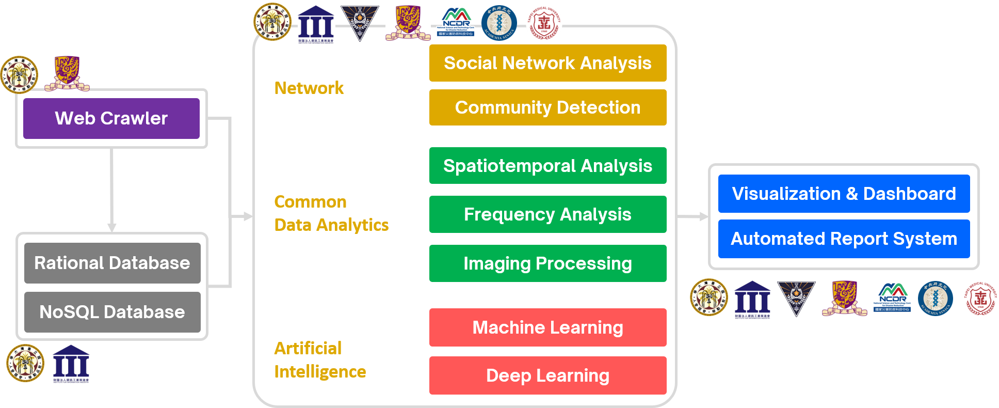
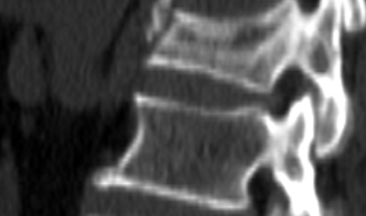
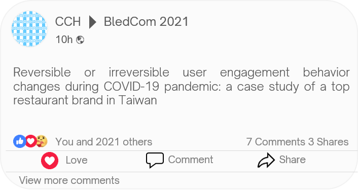
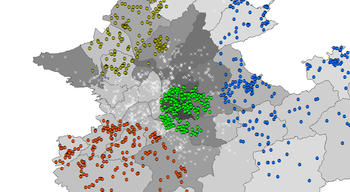
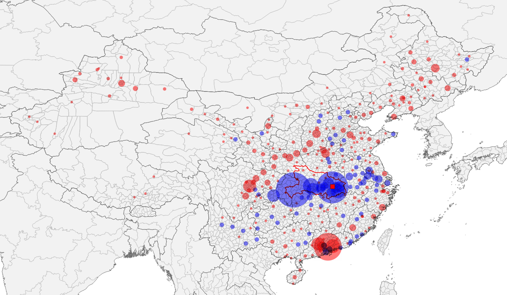
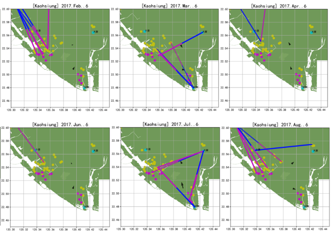
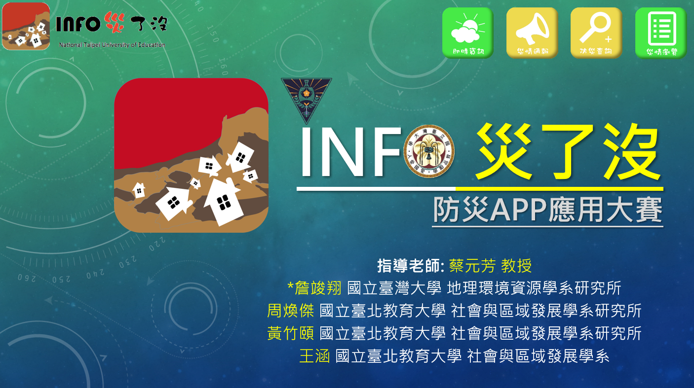
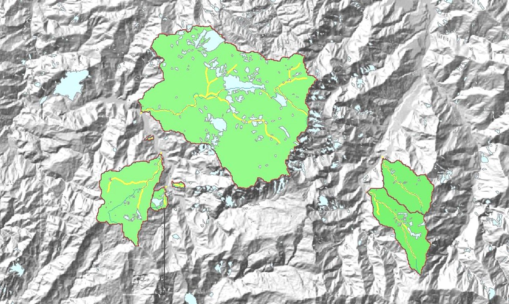

工作經歷
“Learning by Doing” - John Deway
Across academic, governmental, and industrial fields ...

-
專案助理教授 @ 國立臺灣師範大學 地理學系
Aug. 2023 - 至今- 利用圖神經網路和圖機器學習訓練城鄉人口流動預測模型，用於未來城市規劃和人流預測。
- 課程教學: 社會網路分析, 網頁爬蟲實務, 都市地理資訊系統, 醫學地理研討.
-
專任助理教授 @ 中原大學 智慧運算與大數據碩士學位學程
專任助理教授 @ 中原大學 智慧運算與大數據學士班
Aug. 2022 - Jul. 2023- 利用 GeoAI 來解析城市和國際人員流動性拓墣特徵，以建構模擬都市移動網絡。
- 課程教學: 智慧運算技術, 機率與統計(一), 機率與統計(二), 大數據基礎與應用, 專題實作(一), 專題實作(二), 人工智慧應用趨勢講座(一), 深度學習, 自然科學與人工智慧導論, 複雜網絡分析, 電資專業導論
-
人工智慧顧問 @ 台灣資安鑄造股份有限公司
Apr. 2022 - Apr. 2023- 採用機器學習技術對網路安全告警進行分類，目前準確率已達99.7%。
- 結合聯邦學習框架來建立網路流量資料的無伺服器邊緣偵測器。
-

博士後研究員 @ 臺北醫學大學醫學系 放射線學科
博士後研究員 @ 臺北市立萬芳醫院 影像醫學部
Aug. 2021 - Jul. 2022- 評估三維骨小樑微觀結構參數，與雙能X光吸收儀之areal BMD與QCT之volumetric BMD之間的關係。
- 使用二維areal X光和不同的三維CT分級方法(傳統、共識和全局搜尋)研究椎體骨折評估問題。
- 開發100%準確度和快速的自動化骨質密度(BMD)報告產生器，以提高報告製作效率。
-

資料科學家 | 社群媒體行銷研究 @ 香港中文大學 新聞傳播學院
Aug. 2019 - 至今- 彙整頂級餐飲品牌的Facebook官方粉絲專頁的參與度數據相關社群媒體資料，以了解從2019年至 2021年疫情間，不同防疫政策對於社群媒體行為的影響。
- 結合社群媒體相關數據，應用機器學習技術和時間序列分析來預測預訂趨勢。
-

資料科學家 @ 中央研究院 社會學研究所
Mar. 2019 - Jul. 2023- 利用複雜網路分析技術，結合定量和定性方法研究社交網路的發展特徵。
- 以時空統計技術（SaTScan & LISA) 分析台北市 400 年開墾資料，呈現多種宗教地景發展的時空特徵。
- 應用Louvain網路分群和ML技術（PCA、階層式分群）剖析媽祖進香網絡與宗教發展歷史之間關聯性。
-

研究助理 & 課程助教 @ 國立臺灣大學地理環境資源學系 地理計算科學研究室
Aug. 2019 - Jul. 2021- 開發智慧型手機應用程式，以即時評估直飛和轉機航空乘客的全球暴露風險，降低航空旅客在COVID-19疫情中的感染風險。
- 在COVID-19疫情期間，透過網路爬蟲將超過100 萬條鐵路時刻表數據彙整，分析了武漢封城後轉乘活動在跨省傳播中的作用。
- 利用存活分析和網路分群，對超過8500萬個全球航班時刻表進行H1N1全球疾病傳播的分析。
-

研究助理 & 課程助教 @ 國立臺灣大學地理環境資源學系 遙測及空間知識實驗室
Mar. 2013 - Jul. 2021- 設計了自動化低頻電磁訊號處理和地層模式判識系統。
- 將機器學習技術應用於地震前兆分析和自動三維地層結構辨識。
-

實習/資料分析工程師 @ 財團法人資訊工業策進會 資安科技研究所
Aug. 2017 - Feb. 2019- 分析空氣污染數據，解析固定排放源與環境空氣品質之間的時空因果關係。
- 使用 Elasticsearch、Logstash 和 Kibana (ELK) 開發即時開源網路安全監控系統，對可疑惡意封包進行分析。
- 導入生成對抗網路 (Sequence GAN) 模型，以使用 250GB 惡意軟體資料集檢測惡意行為。
-

研究助理 & 課程助教 @ 國立臺北教育大學社會與區域發展學系 土石流災害實驗室
May 2013 - Jan. 2016- 利用社群媒體廣告推廣群眾外包土石流災害平台和行動應用程式。
- 結合時空水文分析，透過網站和行動應用程式向專家和一般用戶，呈現即時描述土石流災害的潛勢分析與資訊。
-

Internship @ 行政法人國家災害防救科技中心 坡地組
Jul. 2011 - Aug. 2011- 運用空間統計方法，從大量高解析度遙測影像中盼識隱藏的土石流和山崩區域。